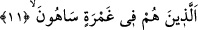

kahrolsun!” denmek istenmiştir.
11. Onlar koyu bir cehalet içerisinde kalmış gafillerdir.
Onlar, âhiret husûsunda kendilerini her noktadan sarmış bir batak, bir dalâlet ve
cehâlet içindedirler. Râğıb “Gamr” kelimesinin aslında “bir şeyin izinin gitmesi,
giderilmesi” anlamında olduğunu, uğradığı yerin izini silen sel gibi çok suya da “mâ-i
gâmir” denilmesinin sebebinin bu olduğunu söylemiştir. Yine cömert kişiye, yürük cins
ata, deryâ gibi kelâmı olan kimseye ve denizin engin yerine de bu isim verilmektedir. Bu
kelimenin, sâhibini örtmesi sebebiyle cehâlet ve benzeri durumlar için de darb-ı mesel
olarak kullanıldığı görülmektedir. Nitekim “Biz onların üzerini kapattık artık gerçeği
göremezler” (Yâsîn 36/ 9) âyetiyle de buna işâret olunmuştur. Ayrıca zorluklar ve
sıkıntılara da “ğamerât” denilmektedir. Nitekim kelimenin “O zâlimleri ölüm dalgaları
(sıkıntıları) içindeyken bir görsen” (el-En’âm 6/93) âyetinde bu anlamda
kullanıldığını görmekteyiz.
Şâir de bir şiirinde şöyle der:
Beni kınayanların sıkıntıda olduğumu kabul etmelerine rağmen,
Benim sıkıntım (bir türlü) kalkmıyor.
“Onlar gâfildirler, yanılıp durmaktadırlar.” Yâni onlar, emrolundukları şeylerden
gâfildirler. Bazı ulema gamranın “gaflet”in üzerinde, sehvin “gaflet”in altında bir
yanılma olduğunu belirtmişlerdir.
Râğıb bu hususta şöyle der: Sehv, gafletten kaynaklanan bir hatâdır. Bu da iki
kısımdır. Onlardan biri, herhangi bir sebep ve gerekçe olmaksızın yapılandır ki, delinin,
bir insana sövmesi bu kabildendir. İkincisi ise bir sebebi bulunandır. İçki içip de sarhoş
olan kimsenin, kasıd olmaksızın yaptığı hareketler de buna misâldir. Birincisi delinin
hâli, affedilmiştir. Ama ikincisi sarhoşun hâli için sorgu vardır. İşte Allah Teâlâ’nın bu
âyetle kınadığı kimseler de bu ikinci grupta olanlardır.
Keşfu’l-esrar’da “Harrâsûn”dan muradın, Mekke’nin tepelerinde, Peygamberimiz
(s.a.)’in Mekkelileri dinlerinden uzaklaştırmasına engel olmak ve orada bazı insanları
nöbetçi olarak tutarak insanları İslam’dan alıkoymak üzere and içen kimseler hakkında
olduğu belirtilmiştir. Bunlar, kafilelerin giriş vaktinde Mekke sokaklarının köşe
başlarına oturur, her birisi gelene gidene Hz. Peygamber hakkında yalan söyler,
insanları onun şerefli sohbetinden geri bırakırlardı. İşte Allah, bu kimselere lânet
etmiştir.
Ebu’l-Leys yeminleşen Mekkeliler hakkında: “Mekke’ye gelenlerin bazıları onların